Filo diagonal
Geométrico, con filo rojo. Para abrir el sitio o dar un golpe de marca. Usado: portada.
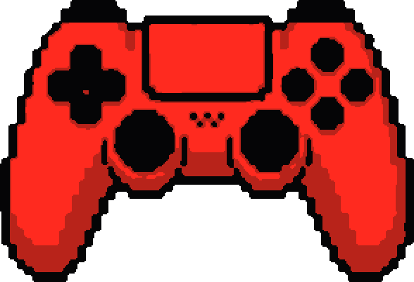
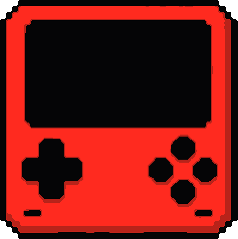
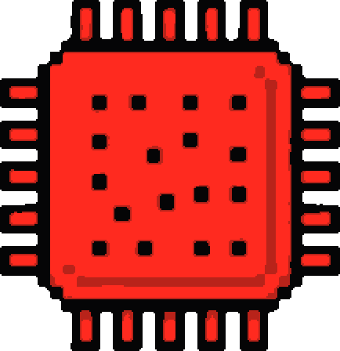
Juegos digitales para Nintendo Switch y Switch 2, además de streaming e IA. Eliges, te confirmamos precio y disponibilidad por WhatsApp, y juegas.
El azul se usa en superficies grandes y tranquilas. El rojo saturado es un acento pequeño, pero con mucha fuerza. El negro hace de corte entre los dos para que la vista descanse.
Regla de oro: el rojo nunca pasa de ~10 % de lo visible a la vez.Rojo y azul nunca se tocan sin una línea negra de 3 px entre ellos.
| Texto \ Fondo | Negro | Noche | Azul Plano | Azul Hondo | Rojo Frente |
|---|---|---|---|---|---|
| Hueso | 18.5 | 17.4 | 7.4 | 11.6 | 3.4 |
| Negro | — | — | 2.5 | 1.6 | 5.4 |
| Rojo Frente | 5.4 | 5.1 | 2.2 ✕ | 3.4 ✕ | — |
| Azul Aire | 9.1 | 8.6 | 3.7 | 5.8 | — |
| Humo | 8.8 | 8.2 | 3.5 | 5.5 | — |
Relación de contraste WCAG. Se usa solo lo que llega a 4.5:1 en texto chico. Rojo sobre azul está prohibido para texto.
Tres fuentes libres (licencia OFL), guardadas dentro de la carpeta: funciona sin internet y sin pagar nada.
Títulos y números grandes, siempre en mayúsculas, peso único. Recuerda al primer diseño (pixel sobre azul) sin llenar todo de pixel.
Párrafos, nombres de juegos y botones largos. Pesos 400 y 600. Limpia y legible en celular.
Etiquetas, números de sección y datos técnicos, en mayúsculas con espaciado. Siempre 11–13 px, nunca para párrafos.
Texto de entrada: una o dos líneas que explican la sección.
Texto normal con interlineado 1.55 y máximo 60 caracteres por línea para que se lea sin cansar.
El rojo se ve más cerca y el azul más lejos. Cada objeto existe una sola vez: nada de copias desplazadas rojo/azul. La profundidad sale de los planos de color, de contornos negros y de sombras duras de capa.
Piezas de hardware, botón de cotizar, etiquetas. Pequeñas y nítidas, con contorno negro.
Contornos de 3 px, sombra dura y cortes. Evita que rojo y azul vibren al tocarse.
Campos grandes, retícula y anillos finos negros. Plano, sin degradados llamativos.
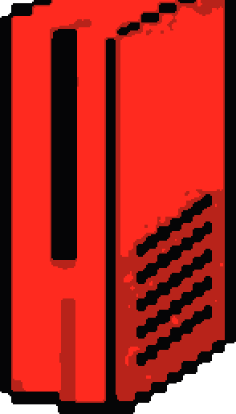
Texto con copias rojo/cian desplazadas. Cansa la vista y parece truco de lentes 3D.
Contraste 2.2:1 y las letras vibran. Prohibido, incluso en tamaño grande.
Produce morado sucio y borra la separación de planos.
El efecto necesita bordes nítidos. El glow lo destruye.
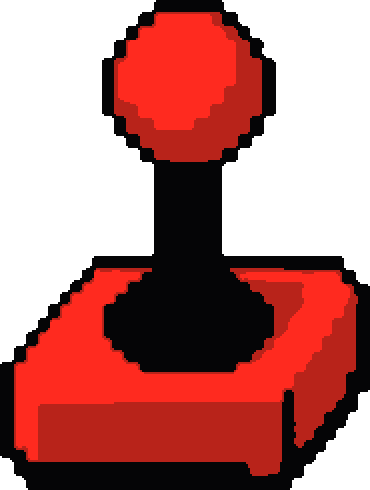
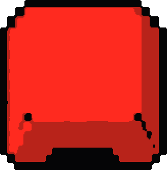
La retícula y los anillos quedan fijos en la pantalla. Cada pieza al frente viaja a su propia velocidad: más lejos = más lenta, más cerca = más rápida. Con «reducir movimiento» activado todo queda quieto.
No todo es pixel: hay geometría, cine, circuitos, pixel y semitono. Todos son vectores que se adaptan a cualquier ancho y siempre cambian de color de un campo al siguiente.
Geométrico, con filo rojo. Para abrir el sitio o dar un golpe de marca. Usado: portada.
Perforaciones y cuadros. Anuncia streaming y entretenimiento. Usado: antes de tipografías y streaming.
Pistas finas en Azul Aire y nodos rojos. Para IA y tecnología.
Bloques de videojuego con piezas rojas encima. Para catálogo y juegos.
Puntos que se apagan: transición suave entre azul y negro, para secciones de descanso.
Regla: el corte siempre usa los colores de arriba y de abajo. Altura 90–200 px. Rojo máximo 3 puntos pequeños.
Alternar 2 campos azules con negro. Nunca dos cortes iguales seguidos.
Los logos de plataformas y servicios van en PNG o SVG sin fondo dentro de una placa de proporción fija, con margen interno del 12 %. Las portadas conservan sus colores y se enmarcan con negro.
Zona de respeto: media altura del emblema por cada lado. Solo sobre fondos oscuros: su parte crema desaparece en claro.
Los PNG son blancos con transparencia: siempre sobre placa negra. La línea punteada marca el margen interno (12 %).


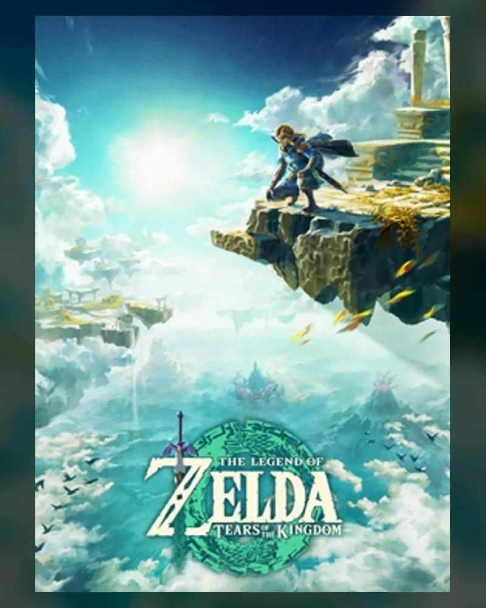
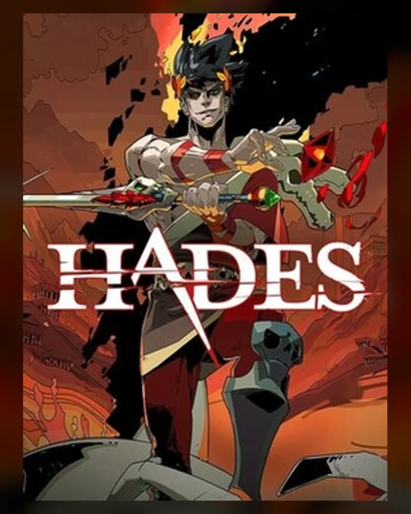
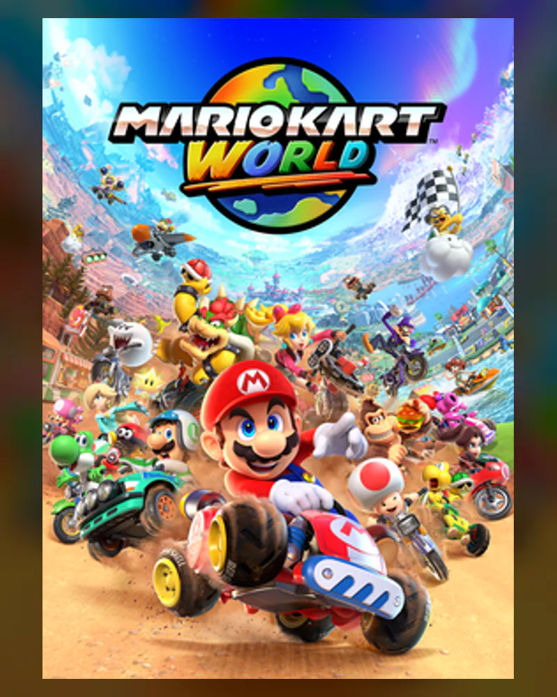
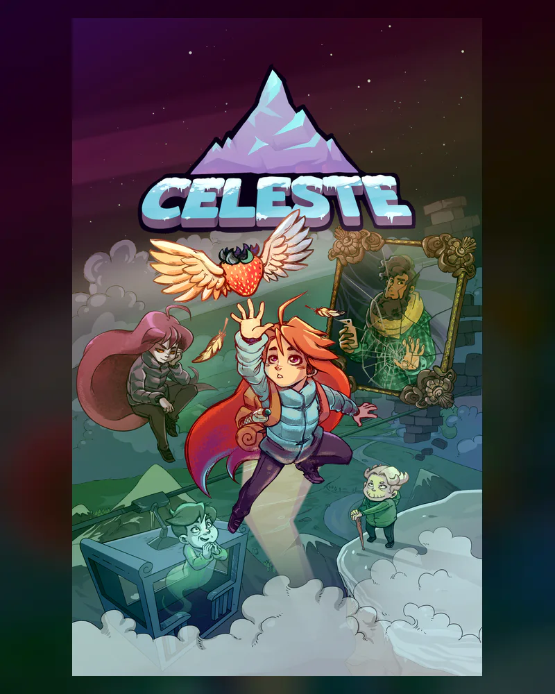
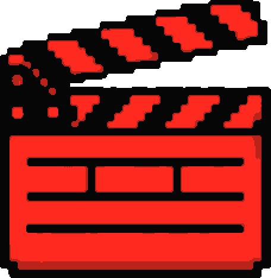
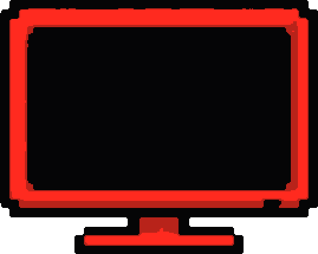
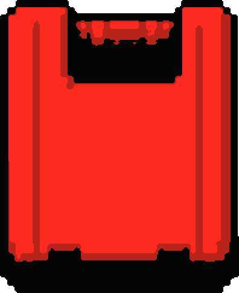
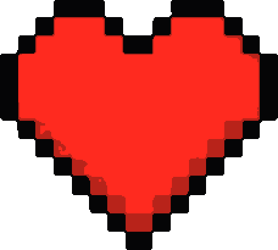
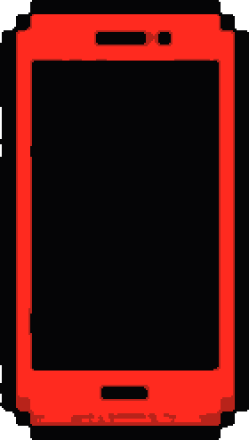
Fondo transparente real (cuadrícula visible). Cada pieza lleva su contorno negro y la sombra dura se agrega por CSS.
Cada fila usa scroll con imán (scroll-snap), flechas, arrastre con mouse, deslizamiento con el dedo y difuminado en los bordes que solo aparece si hay más contenido. También funciona con las flechas del teclado.
Precios: siempre «Consultar precio» · cotización por WhatsApp
Plataformas conocidas, en una fila que se desliza.
Visuales de circuitos y chips: tecnología fría, con una pieza roja como punto focal.